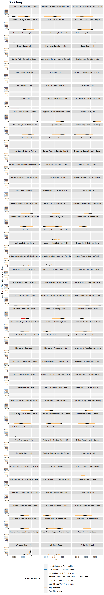

Section 6 Use of Force
6.1 Summary Tables
| Inspection | Total Use of Force |
|---|---|
| Immigration Centers of America - Farmville - Feb. 27, 2020 | 5391 |
| Worcester County Jail - Feb. 3, 2021 | 3348 |
| La Palma Correctional Center - Nov. 5, 2020 | 3011 |
| Sheriff Al Cannon Detention Center - Dec. 12, 2019 | 2427 |
| Essex County Correctional Facility - Oct. 9, 2020 | 1226 |
| Hudson County Corrections and Rehabilitation Center - Oct. 7, 2020 | 1147 |
| Cambria County Prison - Nov. 7, 2019 | 750 |
| York County Prison - Dec. 11, 2020 | 625 |
| Pike County Correctional Facility - Oct. 28, 2020 | 557 |
| Hall County Department of Corrections - Sep. 17, 2020 | 458 |
| Northern Oregon Correctional Facility - Oct. 31, 2019 | 431 |
| York County Prison - Oct. 18, 2019 | 422 |
| Teller County Jail - Oct. 29, 2020 | 242 |
| Teller County Jail - Mar. 31, 2021 | 196 |
| Eloy Detention Center - Feb. 6, 2020 | 142 |
| South Texas ICE Processing Center - Feb. 27, 2020 | 127 |
| Eloy Detention Center - Feb. 5, 2021 | 106 |
| Bergen County Jail - Feb. 24, 2021 | 92 |
| Port Isabel Service Processing Center - Jan. 30, 2020 | 92 |
| Essex County Correctional Facility - Sep. 26, 2019 | 84 |
| Calhoun County Correctional Center - Mar. 5, 2020 | 76 |
| Northwest ICE Processing Center - Dec. 17, 2020 | 66 |
| Bristol County Jail and House of Correction - Nov. 18, 2020 | 65 |
| Calhoun County Correctional Center - Mar. 3, 2021 | 65 |
| Glades County Detention Center - Mar. 5, 2020 | 63 |
| Folkston ICE Processing Center - Oct. 7, 2020 | 61 |
| Stewart Detention Center - Sep. 24, 2020 | 59 |
| LaSalle ICE Processing Center - Sep. 26, 2019 | 56 |
| Bergen County Jail - Feb. 27, 2020 | 55 |
| Sherburne County Jail - Nov. 15, 2019 | 48 |
| Adelanto ICE Processing Center - West - Nov. 21, 2019 | 47 |
| Montgomery Processing Center - Dec. 19, 2019 | 42 |
| Adelanto ICE Processing Center - West - Nov. 18, 2020 | 35 |
| Jena LaSalle Detention Facility - Oct. 7, 2020 | 33 |
| Otay Mesa Detention Center - Jan. 24, 2020 | 32 |
| Mesa Verde ICE Processing Facility - Oct. 14, 2020 | 30 |
| Baker County Detention Center - Nov. 5, 2020 | 29 |
| El Paso Service Processing Center - Dec. 12, 2019 | 28 |
| Otay Mesa Detention Center - Feb. 3, 2021 | 28 |
| Stewart Detention Center - May 6, 2021 | 28 |
| Krome Service Processing Center - Feb. 13, 2020 | 27 |
| Sherburne County Jail - Jan. 21, 2021 | 27 |
| McHenry County Adult Correctional Facility - Oct. 1, 2020 | 23 |
| Irwin County Detention Center - Sep. 25, 2020 | 21 |
| Port Isabel Service Processing Center - Jan. 27, 2021 | 21 |
| Pine Prairie ICE Processing Center - Nov. 5, 2020 | 20 |
| Limestone County Detention Center - Oct. 1, 2020 | 19 |
| Winn Correctional Center - Oct. 19, 2020 | 18 |
| Aurora ICE Processing Center - Nov. 27, 2019 | 17 |
| Aurora ICE Processing Center II - Annex - Nov. 27, 2019 | 17 |
| Baker County Detention Center - May 20, 2021 | 17 |
| Aurora ICE Processing Center - Jan. 27, 2021 | 16 |
| Aurora ICE Processing Center II - Annex - Jan. 29, 2021 | 16 |
| Bluebonnet Detention Center - Oct. 23, 2020 | 16 |
| Montgomery Processing Center - Dec. 16, 2020 | 16 |
| Strafford County Department of Corrections - Dec. 10, 2020 | 15 |
| Wakulla County Detention Facility - Oct. 18, 2019 | 15 |
| Donald W. Wyatt Detention Facility - Nov. 18, 2020 | 14 |
| Johnson County Corrections Center - Sep. 17, 2020 | 14 |
| Caroline Detention Facility - Sep. 17, 2020 | 13 |
| Donald W. Wyatt Detention Facility - Apr. 8, 2021 | 13 |
| Krome Service Processing Center - Feb. 10, 2021 | 13 |
| River Correctional Center - Mar. 12, 2020 | 13 |
| Imperial Regional Detention Facility - Jan. 16, 2020 | 12 |
| Okmulgee County Jail - Moore Detention Facility - Oct. 1, 2020 | 12 |
| River Correctional Center - Oct. 24, 2019 | 12 |
| Wakulla County Detention Facility - Oct. 8, 2020 | 12 |
| Morrow County Correctional Facility - Feb. 10, 2021 | 11 |
| Pulaski County Detention Center - Mar. 12, 2020 | 11 |
| Catahoula Correctional Center - Oct. 9, 2020 | 10 |
| Prairieland Detention Center - Feb. 10, 2021 | 10 |
| Prairieland Detention Center - Feb. 13, 2020 | 10 |
| Pulaski County Detention Center - Mar. 10, 2021 | 10 |
| Adelanto ICE Processing Center - East - Nov. 20, 2020 | 9 |
| Jackson Parish Correctional Center - Nov. 20, 2020 | 9 |
| Otero County Processing Center - Jan. 30, 2020 | 9 |
| Strafford County Department of Corrections - Dec. 12, 2019 | 9 |
| Boone County Jail - Mar. 3, 2021 | 8 |
| CCA Florence Correctional Center - Nov. 6, 2020 | 8 |
| Pine Prairie ICE Processing Center - Apr. 21, 2021 | 8 |
| Plymouth County Correctional Facility - Dec. 30, 2020 | 8 |
| River Correctional Center - Mar. 17, 2021 | 8 |
| Shawnee County Department of Corrections - Adult Detention Center - Sep. 6, 2019 | 8 |
| Torrance County Detention Facility - Oct. 1, 2020 | 8 |
| Butler County Jail - Jan. 21, 2021 | 7 |
| Dodge County Detention Facility - Oct. 29, 2020 | 7 |
| Houston Contract Detention Facility - Jan. 9, 2020 | 7 |
| Imperial Regional Detention Facility - Jan. 13, 2021 | 7 |
| Orange County Correctional Facility - Oct. 30, 2020 | 7 |
| Polk County Adult Detention Center - Jan. 6, 2021 | 7 |
| David L. Moss Criminal Justice Center - Feb. 21, 2020 | 6 |
| Eden Detention Center - Dec. 3, 2020 | 6 |
| Webb County Detention Center - Feb. 3, 2021 | 6 |
| Yuba County Jail - Nov. 15, 2019 | 6 |
| Bossier Parish Corrections Center - Dec. 5, 2019 | 5 |
| El Paso Service Processing Center - Dec. 3, 2020 | 5 |
| Houston Contract Detention Facility - Jan. 6, 2021 | 5 |
| Krome North Service Processing Center - May 13, 2021 | 5 |
| Adams County Correctional Center - Dec. 3, 2020 | 4 |
| Adelanto ICE Processing Center - East - Nov. 21, 2019 | 4 |
| Boone County Jail - Mar. 5, 2020 | 4 |
| Elizabeth Contract Detention Facility - Sep. 17, 2020 | 4 |
| Freeborn County Adult Detention Center - Apr. 16, 2021 | 4 |
| Henderson Detention Center - Nov. 20, 2020 | 4 |
| Jackson Parish Correctional Center - Nov. 7, 2019 | 4 |
| Joe Corley Processing Center - Nov. 15, 2019 | 4 |
| Rio Grande Detention Center - Mar. 10, 2021 | 4 |
| Broward Transitional Center - Sep. 24, 2020 | 3 |
| Caroline Detention Facility - Apr. 28, 2021 | 3 |
| Clay County Jail - May 20, 2021 | 3 |
| Northwest ICE Processing Center - May 13, 2021 | 3 |
| Nye County Detention Center - Nov. 4, 2020 | 3 |
| Pike County Correctional Facility - Apr. 21, 2021 | 3 |
| Polk County Adult Detention Center - Jan. 9, 2020 | 3 |
| Port Isabel Service Processing Center - Jan. 27, 2024 | 3 |
| Richwood Correctional Center - Oct. 3, 2019 | 3 |
| Val Verde Correctional Facility - Sep. 19, 2019 | 3 |
| Yuba County Jail - Dec. 30, 2020 | 3 |
| Adams County Correctional Center - Nov. 21, 2019 | 2 |
| Clinton County Correctional Facility - Nov. 25, 2020 | 2 |
| Clinton County Correctional Facility - Sep. 26, 2019 | 2 |
| Dodge County Detention Facility - Apr. 16, 2021 | 2 |
| Elizabeth Contract Detention Facility - Oct. 3, 2019 | 2 |
| Folkston ICE Processing Center Annex - Oct. 9, 2020 | 2 |
| Hardin County Jail - Sep. 12, 2019 | 2 |
| Howard County Detention Center - Dec. 9, 2020 | 2 |
| Joe Corley Processing Center - Dec. 18, 2020 | 2 |
| Morgan County Adult Detention Center - Nov. 11, 2020 | 2 |
| Orange County Correctional Facility - Apr. 14, 2021 | 2 |
| Seneca County Jail - Jan. 13, 2021 | 2 |
| South Louisiana ICE Processing Center - Dec. 11, 2020 | 2 |
| Allen Parish Public Safety Complex - Dec. 9, 2020 | 1 |
| Broward Transitional Center - Oct. 31, 2019 | 1 |
| Cass County Jail - Sep. 19, 2019 | 1 |
| El Valle Detention Facility - Oct. 24, 2019 | 1 |
| Florence Service Processing Center - Apr. 8, 2021 | 1 |
| Florence Service Processing Center - Nov. 4, 2020 | 1 |
| Freeborn County Adult Detention Center - Sep. 10, 2020 | 1 |
| Geauga County Jail - Oct. 10, 2019 | 1 |
| Kay County Detention Center - Oct. 15, 2020 | 1 |
| Limestone County Detention Center - Oct. 24, 2019 | 1 |
| Nye County Detention Center - May 20, 2021 | 1 |
| Port Isabel Service Processing Center - Jan. 27, 2023 | 1 |
| Rolling Plains Detention Center - Oct. 21, 2020 | 1 |
| Alamance County Detention Center - Jan. 8, 2021 | 0 |
| Alamance County Jail - Nov. 7, 2019 | 0 |
| Allen Parish Public Safety Complex - Dec. 5, 2019 | 0 |
| Bristol County Jail and House of Correction - May 13, 2021 | 0 |
| Brooks County Detention Center - Feb. 21, 2020 | 0 |
| Carver County Jail - Dec. 5, 2019 | 0 |
| Chase County Detention Center - Jan. 27, 2021 | 0 |
| Chippewa County Correctional Facility - Mar. 24, 2021 | 0 |
| Christian County Jail - Jan. 13, 2021 | 0 |
| Cibola County Correctional Center - Dec. 3, 2020 | 0 |
| Cibola County Correctional Center - May 6, 2021 | 0 |
| Clay County Jail - Oct. 15, 2020 | 0 |
| Coastal Bend Detention Center - Jan. 9, 2020 | 0 |
| David L. Moss Criminal Justice Center - Mar. 12, 2021 | 0 |
| Desert View Annex - Mar. 24, 2021 | 0 |
| Dorchester County Detention Center - Mar. 17, 2021 | 0 |
| Dorchester County Detention Center - Mar. 19, 2020 | 0 |
| Dorchester County Detention Center - Mar. 24, 2021 | 0 |
| Douglas County Department of Corrections - Oct. 24, 2019 | 0 |
| East Hidalgo Detention Center - Oct. 3, 2020 | 0 |
| Etowah County Jail - Oct. 23, 2020 | 0 |
| Geauga County Jail - Dec. 10, 2020 | 0 |
| Golden State Annex - Mar. 17, 2021 | 0 |
| Golden State Annex - Oct. 16, 2020 | 0 |
| Hardin County Jail - Nov. 11, 2020 | 0 |
| Howard County Detention Center - Aug. 29, 2019 | 0 |
| Hudson County Corrections and Rehabilitation Center - May 6, 2021 | 0 |
| Jerome Combs Detention Center - Apr. 7, 2021 | 0 |
| Jerome Combs Detention Center - Nov. 25, 2020 | 0 |
| Kay County Detention Center - Oct. 24, 2019 | 0 |
| Laredo Processing Center - May 27, 2021 | 0 |
| Laredo Processing Center - Oct. 23, 2020 | 0 |
| LaSalle Correctional Center - Nov. 15, 2019 | 0 |
| LaSalle County Regional Detention Center - Oct. 21, 2020 | 0 |
| Monroe County Inmate Dormitory - Dec. 30, 2020 | 0 |
| Montgomery County Jail - Nov. 7, 2019 | 0 |
| Otero County Processing Center - Jan. 29, 2021 | 0 |
| Platte County Detention Center - Dec. 12, 2019 | 0 |
| Port Isabel Service Processing Center - Jan. 27, 2022 | 0 |
| Richwood Correctional Center - Oct. 21, 2020 | 0 |
| Rio Grande Detention Center - Mar. 12, 2020 | 0 |
| Robert A. Deyton Detention Facility - Dec. 17, 2020 | 0 |
| Robert A. Deyton Detention Facility - Dec. 5, 2019 | 0 |
| Saint Clair County Jail - Oct. 1, 2020 | 0 |
| San Luis Regional Detention Center - Apr. 28, 2021 | 0 |
| San Luis Regional Detention Center - Nov. 25, 2020 | 0 |
| Seneca County Jail - Oct. 3, 2019 | 0 |
| South Louisiana ICE Processing Center - Nov. 7, 2019 | 0 |
| T. Don Hutto Residential Center - Mar. 31, 2021 | 0 |
| Washoe County Detention Center - Oct. 15, 2020 | 0 |
| Webb County Detention Center - Feb. 6, 2020 | 0 |
| West Texas Detention Facility - Sep. 29, 2020 | 0 |
| Western Tennessee Detention Facility - Jan. 16, 2020 | 0 |
| Willacy County Regional Detention Facility - Oct. 7, 2020 | 0 |
| Willacy County Regional Detention Facility - Sep. 12, 2019 | 0 |
| Winn Correctional Center - Oct. 10, 2019 | 0 |
| Inspection | Use of Force Excluding Strip Searches |
|---|---|
| South Texas ICE Processing Center - Feb. 27, 2020 | 127 |
| Immigration Centers of America - Farmville - Feb. 27, 2020 | 100 |
| La Palma Correctional Center - Nov. 5, 2020 | 70 |
| Northwest ICE Processing Center - Dec. 17, 2020 | 65 |
| Eloy Detention Center - Feb. 5, 2021 | 63 |
| Glades County Detention Center - Mar. 5, 2020 | 63 |
| York County Prison - Oct. 18, 2019 | 61 |
| Eloy Detention Center - Feb. 6, 2020 | 48 |
| Port Isabel Service Processing Center - Jan. 30, 2020 | 47 |
| LaSalle ICE Processing Center - Sep. 26, 2019 | 44 |
| Montgomery Processing Center - Dec. 19, 2019 | 42 |
| Adelanto ICE Processing Center - West - Nov. 21, 2019 | 41 |
| Adelanto ICE Processing Center - West - Nov. 18, 2020 | 35 |
| Jena LaSalle Detention Facility - Oct. 7, 2020 | 33 |
| Mesa Verde ICE Processing Facility - Oct. 14, 2020 | 30 |
| Otay Mesa Detention Center - Jan. 24, 2020 | 30 |
| Stewart Detention Center - Sep. 24, 2020 | 29 |
| Baker County Detention Center - Nov. 5, 2020 | 28 |
| York County Prison - Dec. 11, 2020 | 28 |
| El Paso Service Processing Center - Dec. 12, 2019 | 27 |
| Krome Service Processing Center - Feb. 13, 2020 | 26 |
| Otay Mesa Detention Center - Feb. 3, 2021 | 26 |
| Calhoun County Correctional Center - Mar. 3, 2021 | 25 |
| Sherburne County Jail - Nov. 15, 2019 | 25 |
| McHenry County Adult Correctional Facility - Oct. 1, 2020 | 23 |
| Irwin County Detention Center - Sep. 25, 2020 | 21 |
| Pine Prairie ICE Processing Center - Nov. 5, 2020 | 20 |
| Port Isabel Service Processing Center - Jan. 27, 2021 | 20 |
| Essex County Correctional Facility - Sep. 26, 2019 | 19 |
| Bergen County Jail - Feb. 27, 2020 | 18 |
| Winn Correctional Center - Oct. 19, 2020 | 18 |
| Aurora ICE Processing Center - Nov. 27, 2019 | 17 |
| Aurora ICE Processing Center II - Annex - Nov. 27, 2019 | 17 |
| Baker County Detention Center - May 20, 2021 | 17 |
| Aurora ICE Processing Center - Jan. 27, 2021 | 16 |
| Aurora ICE Processing Center II - Annex - Jan. 29, 2021 | 16 |
| Bluebonnet Detention Center - Oct. 23, 2020 | 16 |
| Montgomery Processing Center - Dec. 16, 2020 | 16 |
| Sherburne County Jail - Jan. 21, 2021 | 16 |
| Bergen County Jail - Feb. 24, 2021 | 15 |
| Folkston ICE Processing Center - Oct. 7, 2020 | 15 |
| Stewart Detention Center - May 6, 2021 | 15 |
| Strafford County Department of Corrections - Dec. 10, 2020 | 15 |
| Johnson County Corrections Center - Sep. 17, 2020 | 14 |
| Wakulla County Detention Facility - Oct. 18, 2019 | 14 |
| Caroline Detention Facility - Sep. 17, 2020 | 13 |
| Krome Service Processing Center - Feb. 10, 2021 | 13 |
| River Correctional Center - Mar. 12, 2020 | 13 |
| Calhoun County Correctional Center - Mar. 5, 2020 | 12 |
| Imperial Regional Detention Facility - Jan. 16, 2020 | 12 |
| Okmulgee County Jail - Moore Detention Facility - Oct. 1, 2020 | 12 |
| River Correctional Center - Oct. 24, 2019 | 12 |
| Wakulla County Detention Facility - Oct. 8, 2020 | 12 |
| Cambria County Prison - Nov. 7, 2019 | 11 |
| Morrow County Correctional Facility - Feb. 10, 2021 | 11 |
| Pulaski County Detention Center - Mar. 12, 2020 | 11 |
| Catahoula Correctional Center - Oct. 9, 2020 | 10 |
| Donald W. Wyatt Detention Facility - Apr. 8, 2021 | 10 |
| Prairieland Detention Center - Feb. 10, 2021 | 10 |
| Prairieland Detention Center - Feb. 13, 2020 | 10 |
| Pulaski County Detention Center - Mar. 10, 2021 | 10 |
| Adelanto ICE Processing Center - East - Nov. 20, 2020 | 9 |
| Donald W. Wyatt Detention Facility - Nov. 18, 2020 | 9 |
| Hudson County Corrections and Rehabilitation Center - Oct. 7, 2020 | 9 |
| Jackson Parish Correctional Center - Nov. 20, 2020 | 9 |
| Otero County Processing Center - Jan. 30, 2020 | 9 |
| Pike County Correctional Facility - Oct. 28, 2020 | 9 |
| Strafford County Department of Corrections - Dec. 12, 2019 | 9 |
| Boone County Jail - Mar. 3, 2021 | 8 |
| CCA Florence Correctional Center - Nov. 6, 2020 | 8 |
| Essex County Correctional Facility - Oct. 9, 2020 | 8 |
| River Correctional Center - Mar. 17, 2021 | 8 |
| Torrance County Detention Facility - Oct. 1, 2020 | 8 |
| Bristol County Jail and House of Correction - Nov. 18, 2020 | 7 |
| Butler County Jail - Jan. 21, 2021 | 7 |
| Dodge County Detention Facility - Oct. 29, 2020 | 7 |
| Houston Contract Detention Facility - Jan. 9, 2020 | 7 |
| Imperial Regional Detention Facility - Jan. 13, 2021 | 7 |
| Limestone County Detention Center - Oct. 1, 2020 | 7 |
| Orange County Correctional Facility - Oct. 30, 2020 | 7 |
| Plymouth County Correctional Facility - Dec. 30, 2020 | 7 |
| Polk County Adult Detention Center - Jan. 6, 2021 | 7 |
| Eden Detention Center - Dec. 3, 2020 | 6 |
| Webb County Detention Center - Feb. 3, 2021 | 6 |
| Worcester County Jail - Feb. 3, 2021 | 6 |
| Yuba County Jail - Nov. 15, 2019 | 6 |
| Bossier Parish Corrections Center - Dec. 5, 2019 | 5 |
| David L. Moss Criminal Justice Center - Feb. 21, 2020 | 5 |
| El Paso Service Processing Center - Dec. 3, 2020 | 5 |
| Houston Contract Detention Facility - Jan. 6, 2021 | 5 |
| Krome North Service Processing Center - May 13, 2021 | 5 |
| Adams County Correctional Center - Dec. 3, 2020 | 4 |
| Adelanto ICE Processing Center - East - Nov. 21, 2019 | 4 |
| Boone County Jail - Mar. 5, 2020 | 4 |
| Elizabeth Contract Detention Facility - Sep. 17, 2020 | 4 |
| Freeborn County Adult Detention Center - Apr. 16, 2021 | 4 |
| Henderson Detention Center - Nov. 20, 2020 | 4 |
| Jackson Parish Correctional Center - Nov. 7, 2019 | 4 |
| Joe Corley Processing Center - Nov. 15, 2019 | 4 |
| Pine Prairie ICE Processing Center - Apr. 21, 2021 | 4 |
| Rio Grande Detention Center - Mar. 10, 2021 | 4 |
| Broward Transitional Center - Sep. 24, 2020 | 3 |
| Caroline Detention Facility - Apr. 28, 2021 | 3 |
| Clay County Jail - May 20, 2021 | 3 |
| Nye County Detention Center - Nov. 4, 2020 | 3 |
| Pike County Correctional Facility - Apr. 21, 2021 | 3 |
| Polk County Adult Detention Center - Jan. 9, 2020 | 3 |
| Port Isabel Service Processing Center - Jan. 27, 2024 | 3 |
| Richwood Correctional Center - Oct. 3, 2019 | 3 |
| Shawnee County Department of Corrections - Adult Detention Center - Sep. 6, 2019 | 3 |
| Teller County Jail - Mar. 31, 2021 | 3 |
| Teller County Jail - Oct. 29, 2020 | 3 |
| Val Verde Correctional Facility - Sep. 19, 2019 | 3 |
| Yuba County Jail - Dec. 30, 2020 | 3 |
| Adams County Correctional Center - Nov. 21, 2019 | 2 |
| Clinton County Correctional Facility - Nov. 25, 2020 | 2 |
| Clinton County Correctional Facility - Sep. 26, 2019 | 2 |
| Dodge County Detention Facility - Apr. 16, 2021 | 2 |
| Elizabeth Contract Detention Facility - Oct. 3, 2019 | 2 |
| Folkston ICE Processing Center Annex - Oct. 9, 2020 | 2 |
| Hall County Department of Corrections - Sep. 17, 2020 | 2 |
| Hardin County Jail - Sep. 12, 2019 | 2 |
| Howard County Detention Center - Dec. 9, 2020 | 2 |
| Joe Corley Processing Center - Dec. 18, 2020 | 2 |
| Morgan County Adult Detention Center - Nov. 11, 2020 | 2 |
| Orange County Correctional Facility - Apr. 14, 2021 | 2 |
| Seneca County Jail - Jan. 13, 2021 | 2 |
| South Louisiana ICE Processing Center - Dec. 11, 2020 | 2 |
| Allen Parish Public Safety Complex - Dec. 9, 2020 | 1 |
| Broward Transitional Center - Oct. 31, 2019 | 1 |
| Cass County Jail - Sep. 19, 2019 | 1 |
| El Valle Detention Facility - Oct. 24, 2019 | 1 |
| Florence Service Processing Center - Apr. 8, 2021 | 1 |
| Florence Service Processing Center - Nov. 4, 2020 | 1 |
| Freeborn County Adult Detention Center - Sep. 10, 2020 | 1 |
| Kay County Detention Center - Oct. 15, 2020 | 1 |
| Limestone County Detention Center - Oct. 24, 2019 | 1 |
| Northwest ICE Processing Center - May 13, 2021 | 1 |
| Nye County Detention Center - May 20, 2021 | 1 |
| Port Isabel Service Processing Center - Jan. 27, 2023 | 1 |
| Rolling Plains Detention Center - Oct. 21, 2020 | 1 |
| Alamance County Detention Center - Jan. 8, 2021 | 0 |
| Allen Parish Public Safety Complex - Dec. 5, 2019 | 0 |
| Bristol County Jail and House of Correction - May 13, 2021 | 0 |
| Brooks County Detention Center - Feb. 21, 2020 | 0 |
| Carver County Jail - Dec. 5, 2019 | 0 |
| Chippewa County Correctional Facility - Mar. 24, 2021 | 0 |
| Christian County Jail - Jan. 13, 2021 | 0 |
| Cibola County Correctional Center - Dec. 3, 2020 | 0 |
| Cibola County Correctional Center - May 6, 2021 | 0 |
| Clay County Jail - Oct. 15, 2020 | 0 |
| Coastal Bend Detention Center - Jan. 9, 2020 | 0 |
| David L. Moss Criminal Justice Center - Mar. 12, 2021 | 0 |
| Desert View Annex - Mar. 24, 2021 | 0 |
| Dorchester County Detention Center - Mar. 17, 2021 | 0 |
| Dorchester County Detention Center - Mar. 24, 2021 | 0 |
| Douglas County Department of Corrections - Oct. 24, 2019 | 0 |
| East Hidalgo Detention Center - Oct. 3, 2020 | 0 |
| Geauga County Jail - Dec. 10, 2020 | 0 |
| Geauga County Jail - Oct. 10, 2019 | 0 |
| Golden State Annex - Mar. 17, 2021 | 0 |
| Golden State Annex - Oct. 16, 2020 | 0 |
| Hardin County Jail - Nov. 11, 2020 | 0 |
| Hudson County Corrections and Rehabilitation Center - May 6, 2021 | 0 |
| Jerome Combs Detention Center - Apr. 7, 2021 | 0 |
| Jerome Combs Detention Center - Nov. 25, 2020 | 0 |
| Kay County Detention Center - Oct. 24, 2019 | 0 |
| Laredo Processing Center - May 27, 2021 | 0 |
| Laredo Processing Center - Oct. 23, 2020 | 0 |
| LaSalle Correctional Center - Nov. 15, 2019 | 0 |
| LaSalle County Regional Detention Center - Oct. 21, 2020 | 0 |
| Monroe County Inmate Dormitory - Dec. 30, 2020 | 0 |
| Montgomery County Jail - Nov. 7, 2019 | 0 |
| Northern Oregon Correctional Facility - Oct. 31, 2019 | 0 |
| Otero County Processing Center - Jan. 29, 2021 | 0 |
| Platte County Detention Center - Dec. 12, 2019 | 0 |
| Port Isabel Service Processing Center - Jan. 27, 2022 | 0 |
| Rio Grande Detention Center - Mar. 12, 2020 | 0 |
| Robert A. Deyton Detention Facility - Dec. 17, 2020 | 0 |
| Robert A. Deyton Detention Facility - Dec. 5, 2019 | 0 |
| Saint Clair County Jail - Oct. 1, 2020 | 0 |
| San Luis Regional Detention Center - Apr. 28, 2021 | 0 |
| San Luis Regional Detention Center - Nov. 25, 2020 | 0 |
| Seneca County Jail - Oct. 3, 2019 | 0 |
| Sheriff Al Cannon Detention Center - Dec. 12, 2019 | 0 |
| South Louisiana ICE Processing Center - Nov. 7, 2019 | 0 |
| T. Don Hutto Residential Center - Mar. 31, 2021 | 0 |
| Washoe County Detention Center - Oct. 15, 2020 | 0 |
| Webb County Detention Center - Feb. 6, 2020 | 0 |
| West Texas Detention Facility - Sep. 29, 2020 | 0 |
| Western Tennessee Detention Facility - Jan. 16, 2020 | 0 |
| Willacy County Regional Detention Facility - Oct. 7, 2020 | 0 |
| Willacy County Regional Detention Facility - Sep. 12, 2019 | 0 |
| Winn Correctional Center - Oct. 10, 2019 | 0 |
Figure 6.1: Facilities with >20 total Use of Force incidents by annual inspection
6.2 Under Reporting Use of Force Incidents
There are few opportunities for independent evaluation of use of force incidents in ICE detention facilities. However, in at least some circumstances use of force incidents are inaccurately documented and under reported. For example, in some instances strip searches are tallied in total use of force summaries and in other cases they are not.
The Bristol County Jail is one noteworthy instance where use of force incidents received independent evaluation. On May 2, 2020 Massachusetts news outlets reported on a major incident that occurred at the Bristol County House of Correction the previous day when detained persons expressed concern about the potential for COVID-19 infection from the facility’s medical wing (Dooling 2020). The Bristol County Sheriff claimed that people refused to go to the medical unit for testing, and those detained reported being attacked with pepper spray and dogs. Nakamoto Group Inspectors visited the facility between November 16-18, 2020 and reviewed it under PBNDS 2008 (ICE and The Nakamoto Group 2020). The inspectors received a G-324 SIS which reported use of force incidents (Figure 6.2). For May, the sheet lists 1 Immediate Use of Force Incident, 1 Use of Force with Chemical Agents, 1 Incident where Non-Lethal Weapons were Used, and 3 Strip Searches. The sheet lists no Use of Force with Serious Injury. Nakamoto Group inspectors found that the facility met all 39 standards and had only three deficient components: Key and Lock Control, Special Management Unit, and Suicide Prevention and Intervention. The Nakamoto inspection letter made no mention of use of force incidents.
Figure 6.2: Cropped from Bristol County Jail SIS Form G-324 (ICE and The Nakamoto Group 2020, 4).
The Massachusetts Attorney General’s Office (MA AG) independently investigated the major incident that occurred on May 1, 2020 (MA AG 2020b). The MA AG’s factual findings (MA AG 2020b, 24–41) identifies:
- 2 instances involving immediate use of force;
- 1 immediate use of force incident with a chemical agent;
- 1 calculated use of force incident that involved 16 officers armed with pepper spray, flash bang grenades, riot shields, shotguns with bean bag rounds, pepper ball launchers, battering rams, multiple K9 teams; and another 12 person restraint team.
The Calculated Use of Force Incident unfolded over the course of more than an hour and involved the deployment of flash bang grenades; firing more than 30 rounds of pepper balls, several of which directly hit individuals; numerous instances involving K-9 use of force, and multiple “hands on” use of force instances. Additionally, the MA GA found multiple cases where individuals suffered serious injuries as the result of the use of force:
- 1 individual experienced cardiac arrest
- 1 individual with a history of chronic obstructive pulmonary disease (COPD) suffered respiratory distress
- 1 individual experienced respiratory distress resulting in critically low oxygen levels
The MA GA concluded that “a series of institutional failures and poor decisions” culminated in a “planned and deliberate–use of force against the ICE B detainees that was disproportionate to the security needs at that time and unnecessarily caused, or risked causing, harm to all involved”(MA AG 2020b, ii). The MA GA found that facility staff used “a flash bang grenade, pepper-ball launchers, pepper spray canisters, anti-riot shields, and canines—against detainees who had exhibited calm and nonviolent behavior for at least an hour before this operation”(MA AG 2020b, ii).
The details of the May 1, 2020 Use of Force incident do not come to light in either SIS form or the Nakamoto Group inspection cover letter. The SIS form inaccurately characterizes the multiple Use of Force incidents entailed in the event, fails to report what is clearly a Calculated Use of Force, and does not report multiple Use of Force Incidents with Serious Injury that resulted from from the extensive use of pepper spray. The Nakamoto cover letter states that, “the detainees felt safe in the facility and registered no substantive com-plaints about any aspect of their detention except for their exposure to the COVID-19 risk in the facility.” Inspectors wrote that “[t]here were no areas of concern or significant observations noted during the inspection” but noted that the “inspection was conducted remotely, and inspectors were unable to personally observe practices and procedures with-in the facility” and that the “inspection team relied upon photographs and/or videos to validate the observation of many standards.”
6.3 Facet Plot of Use of Force by Facility
